01钩子 / 问题
先承诺三个工具覆盖创意工作
开场直接说明找到三个适合创意工作的宝藏 AI，不铺垫具体痛点，依赖‘数量+宝藏’形成收藏预期。
创意工作可以用 Bagel 做多模态改图与3D、用 Kontext 保持角色一致并融合人物、用 ThinkSound 自动匹配视频音效。
这是中位层里保存意图最强的一条：307赞、664藏。它证明‘工具清单’仍然是稳定收藏结构，但没有教程、直达链接和免费边界，评论甚至明确写出‘没教程没直达链接，没赞’，说明可保存不等于立即满意。
创意工作可以用 Bagel 做多模态改图与3D、用 Kontext 保持角色一致并融合人物、用 ThinkSound 自动匹配视频音效。
不是复述内容，而是标出每一段承担的叙事任务、观众问题和画面证据。
开场直接说明找到三个适合创意工作的宝藏 AI，不铺垫具体痛点，依赖‘数量+宝藏’形成收藏预期。
介绍 Bagel 是国产开源多模态模型，展示换表情、改动作、变风格和生成3D模型等多个用途。
用加墨镜、换雪山背景和两个人物融合到同一场景，证明角色一致性与场景迁移。
先播放没有音效的视频，再播放自动配音效结果，环境音与物体运动变化形成直接听觉对照。
最后强调三个工具都是开源并要求观众去试，但没有给安装、入口、费用和硬件要求。
下列章节覆盖视频的主要论点、步骤与结果；每段都保留时间码和关键画面。
开场直接说明找到三个适合创意工作的宝藏 AI，不铺垫具体痛点，依赖‘数量+宝藏’形成收藏预期。
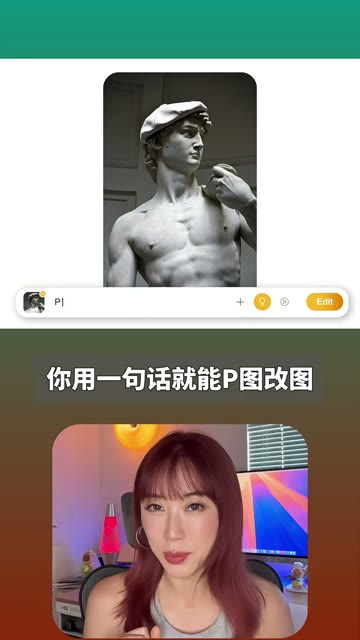
介绍 Bagel 是国产开源多模态模型，展示换表情、改动作、变风格和生成3D模型等多个用途。
用加墨镜、换雪山背景和两个人物融合到同一场景，证明角色一致性与场景迁移。
先播放没有音效的视频，再播放自动配音效结果，环境音与物体运动变化形成直接听觉对照。
最后强调三个工具都是开源并要求观众去试，但没有给安装、入口、费用和硬件要求。
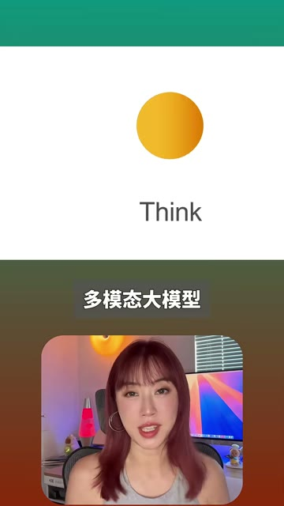
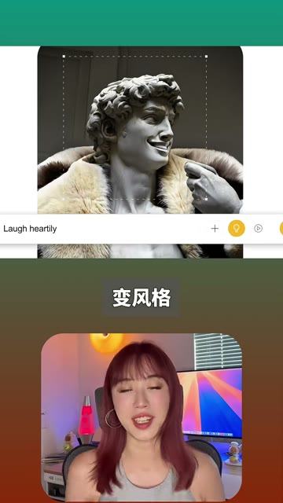
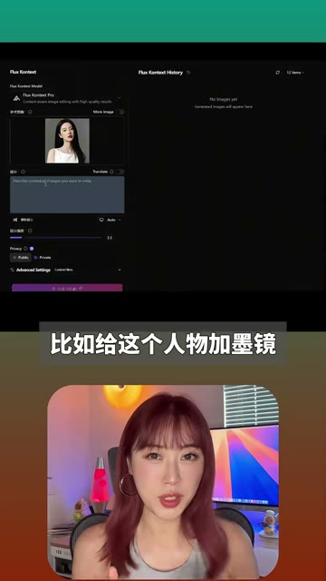
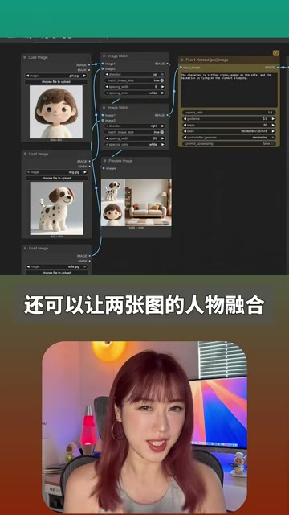
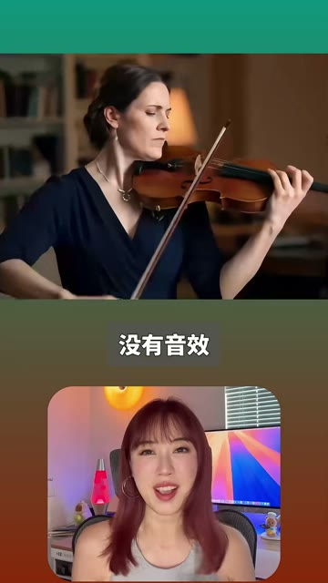
短视频每 1 秒、常规视频每 2 秒、超长视频每 3 秒取一帧。
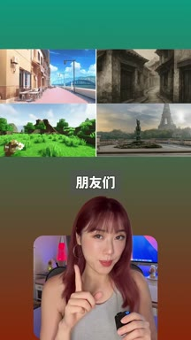
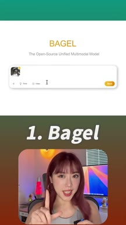
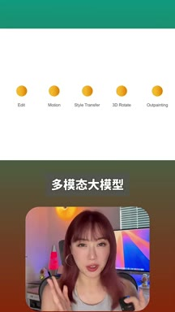
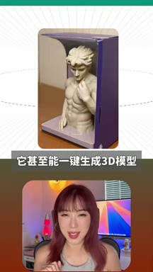
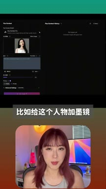
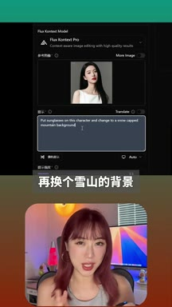
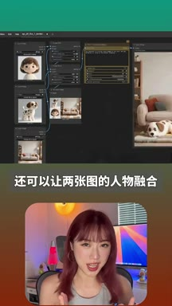
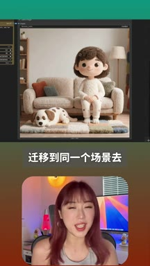
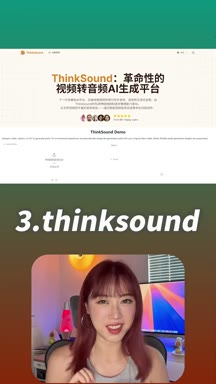
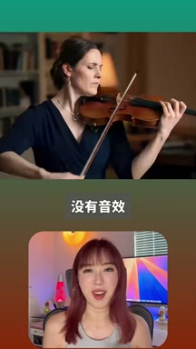
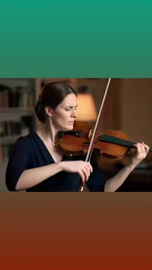
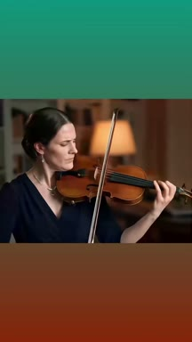
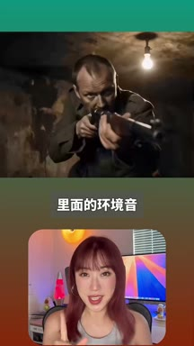
小红书官方 zh-CN 字幕 · 12 段 · 307 字。字幕只记录声音；工具名、界面文字和结果含义必须结合上方视觉知识地图复核。
朋友们给你们找到三个宝藏ai非常适合用来搞创意，第一个bagel
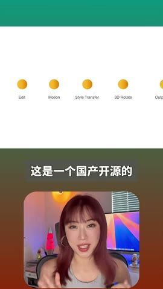
这是一个国产开源的多模态大模型
也可以说是开源版的gpt四o，你可以用一句话就可以p图改图
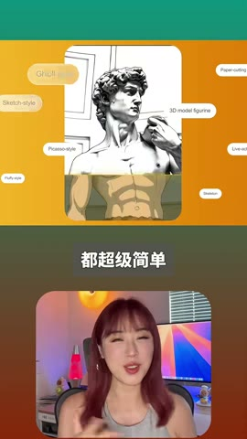
比如给图片换表情，改动作，变风格都超级简单，它甚至能一键生成三d模型
第二个context，这也是一个动嘴p图的开源模型，比如给这个人物加墨镜
再换个雪山的背景，可以看到角色一致性都保持得非常的不错
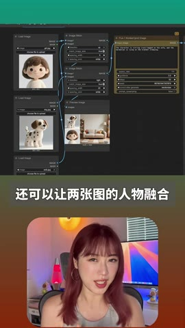
还可以让两张图的人物融合迁移到同一个场景里面去
第三个think sound,这是一个给视频配音效的神器
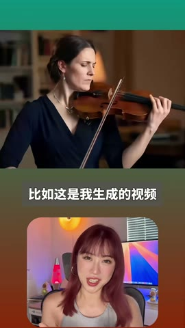
比如这是我生成的视频，没有音效
用它配完音效以后就是这样
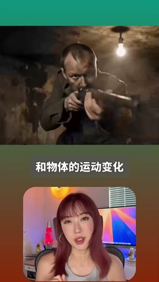
可以听到效果非常的不错，里面的环境音和物体的运动变化基本上都是和画面匹配的
对了，这三个ai都是开源的，朋友们赶紧冲
公开互动显示高收藏意图，但不能证明实际使用率。‘开源’不代表免费托管或低门槛，工具版本、入口和部署条件需另行核实。
打开小红书原帖 ↗